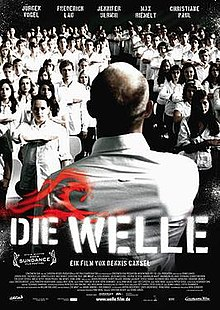
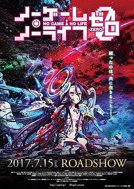

진용
full-time potato @earth
完全に暇つぶしで人生謳歌中。現在世界でニート中。いまはベルリンでLe Wagonなう。次はどこでニートしようかな。言語学びにアラブ圏にでも行こうかな。それとも上座部仏教の僧やるためにタイにでも行こうかな。
See for yourselfMy Favorite Movies
|  | The WaveDie Welle (The Wave) is a 2008 German sociopolitical thriller film directed by Dennis Gansel and starring Jürgen Vogel, Frederick Lau, Jennifer Ulrich and Max Riemelt in the leads. It is based on Ron Jones' social experiment The Third Wave and Todd Strasser's novel, The Wave. The film was produced by Christian Becker for Rat Pack Filmproduktion. It was successful in German cinemas, and after ten weeks, 2.3 million people had watched it. |

|
Train to BusanTrain to Busan (Hangul: 부산행; RR: Busanhaeng) is a 2016 South Korean zombie apocalypse action thriller film directed by Yeon Sang-ho and starring Gong Yoo, Jung Yu-mi, and Ma Dong-seok.The film takes place on a train to Busan, as a zombie apocalypse suddenly breaks out in the country and compromises the safety of the passengers. The film premiered in the Midnight Screenings section of the 2016 Cannes Film Festival on 13 May. On 7 August, the film set a record as the first Korean film of 2016 to break the audience record of over 10 million theatergoers. The film serves as a reunion for Gong Yoo and Jung Yu-mi, who both starred in the 2011 film The Crucible. |
|  |
No Game No Life ZeroNo Game, No Life Zero (Japanese: ノーゲーム・ノーライフ ゼロ Hepburn: Nōgēmu Nōraifu Zero) is a Japanese anime film based on the light novel series No Game No Life by Yuu Kamiya. The film was directed by Atsuko Ishizuka at studio Madhouse. It premiered in Japan on July 15, 2017. The film has been licensed by Sentai Filmworks in the United States, Madman Entertainment in Australia and New Zealand, and by MVM in the United Kingdom. |
About this page
This page has been coded during the FullStack program @LeWagon. That was probably the best experience of my entire life.